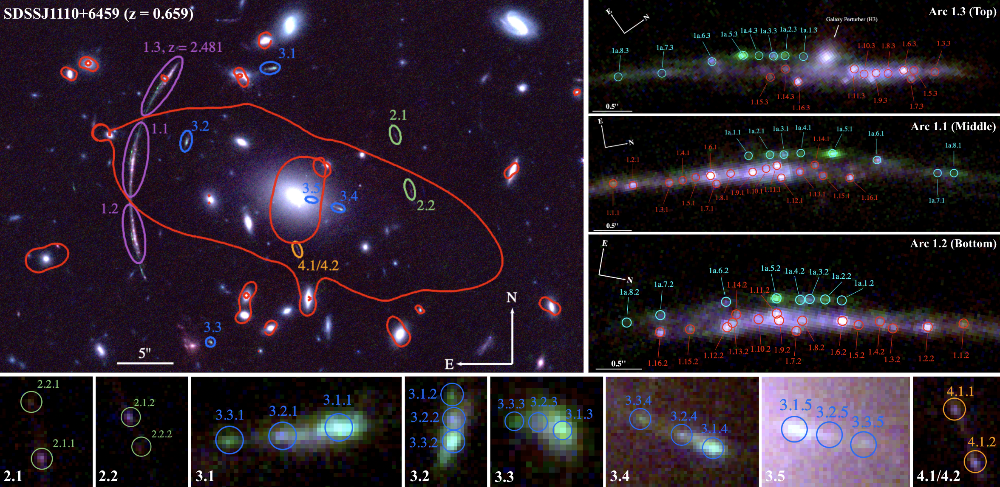
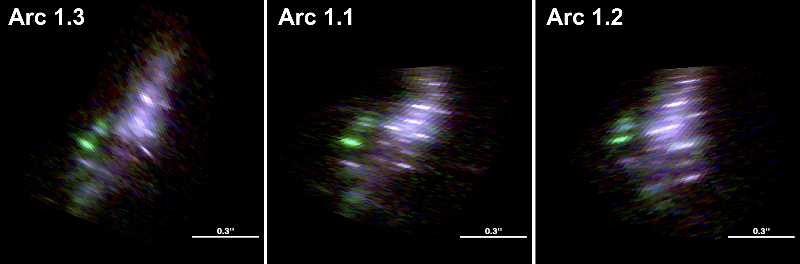

Research
I work with Dr. Keren Sharon at the University of Michigan, developing strong gravitational lens models of galaxy clusters. My research supports investigations of dark matter, galaxy evolution, and the expansion of the Universe.
Strong Gravitational Lens Modeling
Massive galaxy clusters bend the light from background galaxies, producing magnified, distorted, and sometimes multiple images of the same source. I use JWST and archival Hubble Space Telescope imaging, together with available spectroscopy, to identify these images and match features between them. Their positions and redshifts constrain models of the clusters’ total mass distributions, including dark matter. JWST reveals additional galaxies and fine structure within their lensed images, providing a dense set of constraints on the mass models.
I also develop Python tools to analyze these models, measure magnifications and enclosed masses, and reconstruct background galaxies before their light was distorted by lensing. An important part of my work is evaluating how observational uncertainties and modeling assumptions affect these measurements. The resulting models and analysis products support the projects below.
Current Work
JWST LEGGOS: Resolving Galaxy Evolution
The LEGGOS survey (LEnsing and Galaxy Growth: Observing Substructures) combines gravitational magnification with JWST imaging and spectroscopy to investigate star formation and quenching within galaxies at cosmic noon on scales of approximately 10–100 parsecs. These observations reveal individual stellar structures near the peak of cosmic star formation, allowing the collaboration to study how different regions grow and evolve within a galaxy.
I construct strong-lens models, measure magnifications and fluxes, and reconstruct lensed galaxies in the source-plane. I provide model outputs that collaborators use to account for lensing distortions and magnification, recovering the intrinsic properties of luminous clumps observed within the giant arcs.
JWST SLICE: Mapping Galaxy Cluster Evolution
The SLICE survey (Strong LensIng and Cluster Evolution) investigates how dark matter and ordinary matter assemble within massive galaxy clusters across approximately eight billion years of cosmic history, spanning redshifts of z ≈ 0.2–1.9. The collaboration studies how clusters build their stellar content and redistribute matter as they evolve.
I construct strong-lens models and provide associated data products that constrain the clusters’ mass distributions. Comparing these maps with the distribution of galaxies and diffuse stellar light enables investigations of how the clusters’ dark and luminous components evolve together.
Time-Delay Cosmography: Lensed Quasars and Supernovae
When a quasar varies in brightness or a supernova explodes, its multiple lensed images show these changes at different times because light follows different paths through the cluster’s gravitational field. Combining measured time delays with lens models allows us to constrain the Hubble constant, H0, which describes the present-day expansion rate of the Universe.
I contribute strong-lens models and analysis products to studies of wide-separation lensed quasars and supernovae. These models constrain the cluster mass distributions and predict relative image arrival times and magnifications, supporting the interpretation of time delays for cosmological measurements.
Notable Results
A Strong Lens Model of SDSS J1110+6459
As part of LEGGOS, I developed a strong lens model of SDSS J1110+6459, a galaxy cluster at z = 0.659 that lenses the star-forming galaxy SGAS J1110 at z = 2.481 into three images forming a giant arc.
Using JWST NIRCam imaging, NIRSpec spectroscopy, and archival Hubble observations, we identified four multiply imaged background sources and matched more than 20 luminous regions across the primary arc, roughly tripling the number of image constraints relative to previous work

The resulting model reproduces the observed image positions with an image-plane RMS of 0.11'' and gives a total effective areal magnification of 24.2-1.2+3.4 for the giant arc. The dense set of resolved clump constraints improves magnification precision by approximately 2.6–8.3 times over previous models. We also estimate a systematic uncertainty of approximately 7%.
Tracing the three lensed images back through the model produces consistent source-plane reconstructions of the background galaxy. This lensing solution provides the foundation for subsequent studies of its star-forming structures, allowing observed sizes and brightnesses to be translated into intrinsic physical properties.
